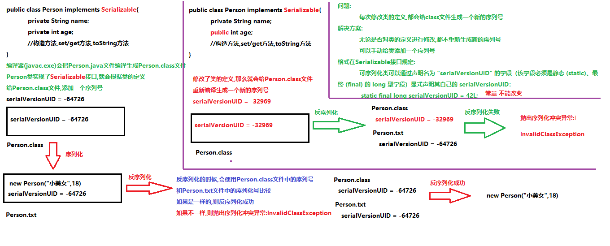
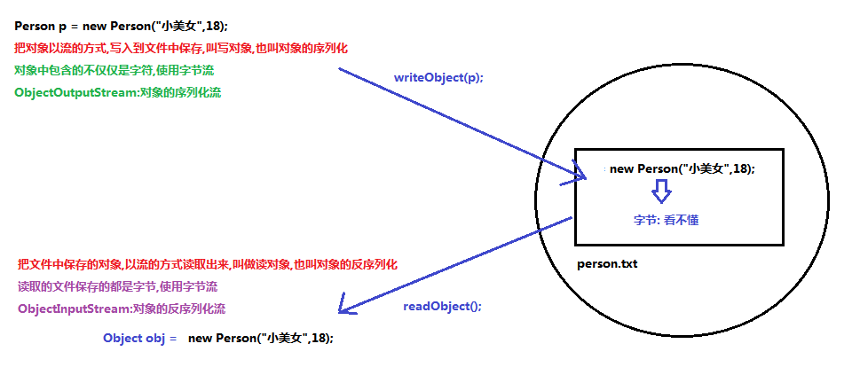

一、IO流概述
- 什么是IO（input&output）
- 数据的传输，可以看做是一种数据的流动，按照流动的方向，以内存为基准，分为 输入input 和 输出 output ，即流向内存是输入流，流出内存的输出流。
- Java中I/O操作主要是指使用 java.io 包下的内容，进行输入、输出操作。输入也叫做读取数据，输出也叫做作写 出数据
- IO的分类
- 根据数据的流向分为：输入流和输出流
- 输入流（input）：把数据从其他设备上读取到内存中的流
- 输出流（output）：把数据从内存中写出到其他设备上的流
- 根据数据的类型分为：字节流和字符流
- 字节流：以字节为单位，读写数据的流
- 字符流：以字符为单位，读写数据的流
- IO流的顶级父类
输入流 | 输出流 | |
字节流 | 字节输入流InputStream | 字节输出流OutputStream |
字符流 | 字符输入流Reader | 字符输出流Writer |
面试题：字节、字符、字符串的区别
字节：byte,一个字节由8个二进制位组成，它是最小的存储单元，计算机中的一切数据都是由字节组成
字符：char，是由一对单引号引起来的内容，其中的内容有且仅可以有一个，祝福是由字节组成
字符串：有多个字符组成的一串数据，是用双引号引起来的内容
二、字节输出流
- java.io.OutputStream:此抽象类表示输出字节流所有的超类，，将指定的字节信息写出到目的地。它定义了字 节输出流的基本共性功能方法。
- 成员方法：
- public void close() ：关闭此输出流并释放与此流相关联的任何系统资源。
- public void flush() ：刷新此输出流并强制任何缓冲的输出字节被写出
- public void write(byte[] b) ：将 b.length字节从指定的字节数组写入此输出流
- public void write(byte[] b, int off, int len) ：从指定的字节数组写入 len字节，从偏移量 off开始输 出到此输出流
- public abstract void write(int b) ：将指定的字节输出流
- 注意：close方法，当完成流的操作时，必须调用此方法，释放系统资源
三、FileOutputStream类
- java.io.FileOutputStream extends OutputStream文件输字节出流，把内存中的数据写入到硬盘的文件中
- java.io.FileOutputStream extends OutputStream
- 构造方法：
- FileOutputStream(String name)创建一个向具有指定名称的文件中写入数据的输出文件流
- FileOUtputStream(File file)创建一个向指定File对象表示的文件中写入文件的输出流
- 参数：
- String name：目的是一个文件的路径
- File file：目的是一个文件
- 作用：
- 创建一个FileOutputStream对象，如果有原文件，则会清空原文件后再输出
- 会根据构造方法中传递的文件/文件路径，创建一个空的文件
- 会把FileOutputStream对象指向创建好的文件
- 写入数据的原理（内存-->硬盘）
- java程序-->JVM（Java虚拟机）-->os（操作系统）-->os调用写数据的方法-->把数据写入到文件中
- 字节输出流的使用步骤
- 创建一个FileOutputStream对象，构造方法汇总传递写入的数据的目的地
- 调用FileOutputStream对象中的方法write，把数据写入到文件中
- 释放资源（流使用会占用一定的内存，使用完毕要把内存清空，提供成需的效率）
- 字节输出流写入多个字节的方法
- public void write(byte[] b)：将b.length字节从指定的字节数组写入此输入流
- 如果写的第一个字节是正数（0-127），那么显示的时候回查询ASCII表
- 如果写的第一个字节是负数，那第一个子级会和第二个字节，两个字节组成一个中文显示，查询系统默认码表（GBK）
- public void write(byte[] b, int off, int len)，把字节数组的一部分写入到文件中
- int off:数组的开始索引
- int len:写几个字符
- getBytes()返回字节数组
- UTF-8中3个字节是一个中文，GBK中2个字节是一个中文
- 追加写/续写：使用两个有参数的构造方法
- FileOutputStream(String name,boolean oppend)创建一个向具有指定name的文件中写入数据的输出文件流。
- FileOutputStream(File file, boolean oppend)创建一个向指定File对象表示的文件中写入数据的文件输出流
- 参数：
- String name,File file:写入数据的目的地
- boolean append:追加写开关
- true：创建对象不会覆盖原文件，继续在我呢间的末尾追加数据
- false：不会创建文件，只是在原文件的基础上重写覆盖原文件
- 换行：
- windows:\r\n
- linux:\n
- mac:\r
四、字节输入流
- java.io.InputStream 抽象类是表示字节输入流的所有类的超类，可以读取字节信息到内存中。它定义了字节输入 流的基本共性功能方法。
- 定义了所有子类共性的方法
- public void close() ：关闭此输入流并释放与此流相关联的任何系统资源。
- public abstract int read() ： 从输入流读取数据的下一个字节。
- public int read(byte[] b) ： 从输入流中读取一些字节数，并将它们存储到字节数组 b中 。
五、FileInputStream类
- java.io.FileInputStream extends InputStream,文件字节输入流，把硬盘中文件中的数据，读取到内存中使用
- java.io.FileInputStream extends InputStream
- 构造方法
- FileInputStream(File file) ： 通过打开与实际文件的连接来创建一个 FileInputStream ，该文件由文件系 统中的 File对象 file命名。
- FileInputStream(String name) ： 通过打开与实际文件的连接来创建一个 FileInputStream ，该文件由文件 系统中的路径名 name命名。
- 参数：
- String name：文件的路径
- File file：文件
- 作用：
- 会创建一个FileInputStream对象
- 会把FileInputStream对象指定构造方法中要读取的文件
- 读取原理：
- java 程序 --> JVM --> OS 读取数据的方法 -->读取文件
- public abstract int read() ： 从输入流读取数据的下一个字节。
- 使用步骤：
- 创建FileInputStream对象，构造方法中绑定要读取的数据源
- 使用FIleInputStream对象中的方法read，读取文件
- 布尔表达式(len = fis.read()) != -1
- fis.read():读取一个字节
- len = fis.read():把读取到的字节赋值给变量len
- (len = fis.read()) != -1 判断变量是否等于-1
- 释放资源
- int read(byte[] b)从输入流中读取一定数量的字节，并将其存储在缓冲区数组b中
- 方法的参数byte[]的作用：
- 起到缓冲作用，存储每次图区到的多个字节
- 数组的长度一般定义为1024或1024的整数倍
- 方法的返回值int是每次读取的有效字节个数
六、字符流
- 以字符为单位读写数据，专门用于处理文本文 件。
七、字符输入流（Reader）
- java.io.Reader 抽象类是表示用于读取字符流的所有类的超类，可以读取字符信息到内存中。它定义了字符输入 流的基本共性功能方法。
- java.io.FileReader extends InputStreamReader extends Reader
- 共有方法
- public void close() ：关闭此流并释放与此流相关联的任何系统资源。
- public int read() ： 从输入流读取一个字符
- public int read(char[] cbuf) ： 从输入流中读取一些字符，并将它们存储到字符数组 cbuf中
七、FileReader类
- java.io.FileReader 类是读取字符文件的便利类。构造时使用系统默认的字符编码和默认字节缓冲区。
- 字符编码：字节与字符的对应规则。Windows系统的中文编码默认是GBK编码表
- 字节缓冲区：一个字节数组，用来临时存储字节数据
- 构造方法
- FileReader(File file) ： 创建一个新的 FileReader ，给定要读取的File对象
- FileReader(String fileName) ： 创建一个新的 FileReader ，给定要读取的文件的名称。
八、字符输出流（Writer）
- java.io.Writer 抽象类是表示用于写出字符流的所有类的超类，将指定的字符信息写出到目的地。它定义了字节 输出流的基本共性功能方法。
- java.io.FileWriter extends OutputStreamWriter extends Writer
- 共有方法：
- void write(int c) 写入单个字符。
- void write(char[] cbuf) 写入字符数组。
- abstract void write(char[] cbuf, int off, int len) 写入字符数组的某一部分,off数组的开始索引,len 写的字符个数
- void write(String str) 写入字符串。
- void write(String str, int off, int len) 写入字符串的某一部分,off字符串的开始索引,len写的字符个 数。
- void flush() 刷新该流的缓冲
- void close() 关闭此流，但要先刷新它
- 注意：
- 关闭资源时，与FileOutputStream不同，如果不关闭，数据只是保存到缓冲区，并未保存到文件
- 虽然参数为int类型的四个字节，但是只会保留一个字符的信息写出
- 未调用close方法，数据只是保存到了缓冲区，并未写出到文件中
九、FileWriter类
- java.io.FileWriter 类是写出字符到文件的便利类。构造时使用系统默认的字符编码和默认字节缓冲区
- 构造方法：
- FileWriter(File file) ： 创建一个新的 FileWriter，给定要读取的File对象。
- FileWriter(String fileName) ： 创建一个新的 FileWriter，给定要读取的文件的名称。
- 关闭和刷新
- 因为内置缓冲区的原因，如果不关闭输出流，无法写出字符到文件中。但是关闭的流对象，是无法继续写出数据 的。如果我们既想写出数据，又想继续使用流，就需要 flush 方法了。
- 方法
- flush ：刷新缓冲区，流对象可以继续使用
- close :先刷新缓冲区，然后通知系统释放资源。流对象不可以再被使用了。
- 写出其他数据
- 写出字符数组： write(char[] cbuf) 和 write(char[] cbuf, int off, int len) ，每次可以写出字符数 组中的数据，用法类似FileOutputStream
- 写出字符串 ：write(String str) 和 write(String str, int off, int len) ，每次可以写出字符串中的 数据，更为方便
- 续写和换行：操作类似于FIleOutputStream
- 注意：FileWriter有缓冲区，字符流，只能操作文本文件，不能操作图片，视频等非文本文件。当我们单纯读或者写文本文件时，使用字符流，其他情况使用字节流
十、IO异常处理
- JDK之前：之前的入门练习，我们一直把异常抛出，而实际开发中并不能这样处理，建议使用 try...catch...finally 代码 块，处理异常部分，
public class HandleException1 {
public static void main(String[] args) {
// 声明变量
FileWriter fw = null;
try {
//创建流对象
fw = new FileWriter("fw.txt");
// 写出数据
fw.write("黑马程序员"); //黑马程序员
} catch (IOException e) {
e.printStackTrace();
} finally {
try {
if (fw != null) {
fw.close();
}
} catch (IOException e) {
e.printStackTrace();
}
}
}
}
- JDK7处理：使用JDK7优化后的 try-with-resource 语句，该语句确保了每个资源在语句结束时关闭。所谓的资源 （resource）是指在程序完成后，必须关闭的对象。
- 在try的后边可以增加一个（），在括号中可以定义流对象
- 那么这个流对象的代码在try作用域中有效
- try中的代码执行完毕，会自动把流对象释放，不用写finally
- 格式：
try(创建流对象语句，如果多个，使用‘;’隔开){
//读写数据
}catch(IOException e){
e.printStackTrace();
}
示例：
public class HandleException2 {
public static void main(String[] args) {
// 创建流对象
try ( FileWriter fw = new FileWriter("fw.txt"); ) {
// 写出数据
fw.write("黑马程序员"); //黑马程序员
} catch (IOException e) {
e.printStackTrace();
}
}
}
- JDK9: 中 try-with-resource 的改进，对于引入对象的方式，支持的更加简洁。被引入的对象，同样可以自动关闭， 无需手动close，我们来了解一下格式。
- 格式：
//被final修饰的对象
final Resource resource1 = new Resource("resource1");
//普通对象
Resource resource2 = new Resource("resource2");
//引入方式：创建新的变量保存
try(Resource r1 = resource1;Resource r2 = new resource2){
//使用对象
}
十一、属性集
- 概述：java.util.Properties 继承于 Hashtable ，来表示一个持久的属性集。它使用键值结构存储数据，每个键及其 对应值都是一个字符串。该类也被许多Java类使用，比如获取系统属性时， System.getProperties 方法就是返回 一个 Properties 对象。
- java.util.Properties集合 extends Hashtable<k,v> implements Map<k,v>
- Properties集合特点：
- Properties 类表示了一个持久的属性集。Properties 可保存在流中或从流中加载。
- Properties集合是一个唯一和IO流相结合的集合
- 可以使用Properties集合中的方法store,把集合中的临时数据,持久化写入到硬盘中存储
- 可以使用Properties集合中的方法load,把硬盘中保存的文件(键值对),读取到集合中使用
- Properties集合是一个双列集合,key和value默认都是字符串
- Properties类
- 构造方法
- public Properties() :创建一个空的属性列表。
- 基本的存储方法
- public Object setProperty(String key, String value) ： 保存一对属性
- public String getProperty(String key) ：使用此属性列表中指定的键搜索属性值。
- public Set<String> stringPropertyNames() ：所有键的名称的集合。
- 与流相关的方法，可以使用Properties集合中的方法load,把硬盘中保存的文件(键值对),读取到集合中使用
- public void load(InputStream inStream) ： 从字节输入流中读取键值对
- void load(Reader reader)
- 参数：
- InputStream inStream:字节输入流,不能读取含有中文的键值对
- Reader reader:字符输入流,能读取含有中文的键值对
- 使用步骤
- 创建Properties集合对象
- 使用Properties集合对象中的方法load读取保存键值对的文件
- 遍历Properties集合
- 注意事项：
- 存储键值对的文件中,键与值默认的连接符号可以使用=,空格(其他符号)
- 存储键值对的文件中,可以使用#进行注释,被注释的键值对不会再被读取
- 存储键值对的文件中,键与值默认都是字符串,不用再加引号
- 可以使用Properties集合中的方法store,把集合中的临时数据,持久化写入到硬盘中存储
- void store(OutputStream out, String comments)
- void store(Writer writer, String comments)
- 参数：
- OutputStream out:字节输出流,不能写入中文
- Writer writer:字符输出流,可以写中文
- String comments:注释,用来解释说明保存的文件是做什么用的
- 使用步骤：
- 创建Properties集合对象,添加数据
- 创建字节输出流/字符输出流对象,构造方法中绑定要输出的目的地
- 使用Properties集合中的方法store,把集合中的临时数据,持久化写入到硬盘中存储
- 释放资源
- Properties集合有一些操作字符串的特有方法
- Object setProperty(String key, String value) 调用 Hashtable 的方法 put。
- String getProperty(String key) 通过key找到value值,此方法相当于Map集合中的get(key)方法
- Set<String> stringPropertyNames() 返回此属性列表中的键集，其中该键及其对应值是字符串,此方法相当于Map集合中的keySet方法
- 与流相关的方法
- public void load(InputStream inStream) ： 从字节输入流中读取键值对。
十二、缓冲流
缓冲流不用释放参数基本流对象，因为在缓冲流的源码中已经对参数流对象进行了释放
FileInputStream,BufferedInputStream继承自InputStream
FileOutputStream,BufferedOutputStream继承自OutputStream
FileReader,BufferedReader,InputStreamReader继承自Reader
FileWriter,BufferedWriter,OutputStreamWriter继承自Writer
InputStreamReader:字节->字符，读取文件，以字符形式保存在内存中
OutputStreamWriter:字符->字节，写入文件，将内存中字符形式的文件以字节形式写入文件中
- 缓冲流,也叫高效流，是对4个基本的FileXxx 流的增强，所以也是4个流，按照数据类型分类：
- 字节缓冲流：BufferedInputStream，BufferedOutputStream
- 字符缓冲流：BufferedReader，BufferedWriter
- 缓冲流的基本原理，是在创建流对象时，会创建一个内置的默认大小的缓冲区数组，通过缓冲区读写，减少系统IO次数，从而提高读写的效率，缓冲区默认大小为8M

- 字节缓冲流
- 构造方法
- public BufferedInputStream(InputStream in) ：创建一个 新的缓冲输入流。
- public BufferedOutputStream(OutputStream out)： 创建一个新的缓冲输出流。
- 字节缓冲输出流
- java.io.BufferedOutputStream extends OutputStream，BufferedOutputStream:字节缓冲输出流
- 构造方法
- BufferedOutputStream(OutputStream out) 创建一个新的缓冲输出流，以将数据写入指定的底层输出流。
- BufferedOutputStream(OutputStream out, int size) 创建一个新的缓冲输出流，以将具有指定缓冲区大小的数据写入指定的底层输出流。
- 参数:
- OutputStream out:字节输出流
- 我们可以传递FileOutputStream,缓冲流会给FileOutputStream增加一个缓冲区,提高FileOutputStream的写入效率
- int size:指定缓冲流内部缓冲区的大小,不指定默认
- 继承自父类的共性成员方法
- public void close() ：关闭此输出流并释放与此流相关联的任何系统资源。
- public void flush() ：刷新此输出流并强制任何缓冲的输出字节被写出。（只有输出流才有flush方法）
- public void write(byte[] b)：将 b.length字节从指定的字节数组写入此输出流。
- public void write(byte[] b, int off, int len) ：从指定的字节数组写入 len字节，从偏移量 off开始输出到此输出流。
- public abstract void write(int b) ：将指定的字节输出流。
- 使用步骤
- 创建FileOutputStream对象,构造方法中绑定要输出的目的地
- 创建BufferedOutputStream对象,构造方法中传递FileOutputStream对象对象,提高FileOutputStream对象效率
- 使用BufferedOutputStream对象中的方法write,把数据写入到内部缓冲区中
- 使用BufferedOutputStream对象中的方法flush,把内部缓冲区中的数据,刷新到文件中
- 释放资源(会先调用flush方法刷新数据,第4部可以省略)
- 字节缓冲输入流
- java.io.BufferedInputStream extends InputStreamBufferedInputStream:字节缓冲输入流
- 构造方法
- BufferedInputStream(InputStream in) 创建一个 BufferedInputStream 并保存其参数，即输入流 in，以便将来使用。
- BufferedInputStream(InputStream in, int size) 创建具有指定缓冲区大小的 BufferedInputStream 并保存其参数，即输入流 in，以便将来使用。
- 参数:
- InputStream in:字节输入流
- 我们可以传递FileInputStream,缓冲流会给FileInputStream增加一个缓冲区,提高FileInputStream的读取效率
- int size:指定缓冲流内部缓冲区的大小,不指定默认
- 继承自父类的成员方法
- int read()从输入流中读取数据的下一个字节。
- int read(byte[] b) 从输入流中读取一定数量的字节，并将其存储在缓冲区数组 b 中。
- void close() 关闭此输入流并释放与该流关联的所有系统资源。
- 使用步骤
- 创建FileInputStream对象,构造方法中绑定要读取的数据源
- 创建BufferedInputStream对象,构造方法中传递FileInputStream对象,提高FileInputStream对象的读取效率
- 使用BufferedInputStream对象中的方法read,读取文件
- 释放资源
- 心得：IO流耗费时间：基本IO流>Buffered缓冲流>基本IO流字节数组>Buffered数组缓冲流
- 字符缓冲流
- 构造方法
- public BufferedReader(Reader in) ：创建一个 新的缓冲输入流。
- public BufferedWriter(Writer out)： 创建一个新的缓冲输出流。
- 特有方法
- BufferedReader：public String readLine(): 读一行文字。
- BufferedWriter：public void newLine(): 写一行行分隔符,由系统属性定义符号。
- 字符缓冲输入流
- java.io.BufferedReader extends ReaderBufferedReader:字符缓冲输入流
- 构造方法
- BufferedReader(Reader in) 创建一个使用默认大小输入缓冲区的缓冲字符输入流。
- BufferedReader(Reader in, int sz) 创建一个使用指定大小输入缓冲区的缓冲字符输入流。
- 参数:
- Reader in:字符输入流
- 我们可以传递FileReader,缓冲流会给FileReader增加一个缓冲区,提高FileReader的读取效率
- 特有的成员方法
- String readLine() 读取一个文本行。读取一行数据
- 行的终止符号:通过下列字符之一即可认为某行已终止：换行 ('\n')、回车 ('\r') 或回车后直接跟着换行(\r\n)。不会读取换行符
- 返回值:包含该行内容的字符串，不包含任何行终止符，如果已到达流末尾，则返回 null
- 使用步骤
- 创建字符缓冲输入流对象,构造方法中传递字符输入流
- 使用字符缓冲输入流对象中的方法read/readLine读取文本
- 释放资源
- 字符缓冲输出流
- java.io.BufferedWriter extends Writer：BufferedWriter:字符缓冲输出流
- 构造方法：
- BufferedWriter(Writer out) 创建一个使用默认大小输出缓冲区的缓冲字符输出流。
- BufferedWriter(Writer out, int sz) 创建一个使用给定大小输出缓冲区的新缓冲字符输出流。
- 参数:
- Writer out:字符输出流
- 我们可以传递FileWriter,缓冲流会给FileWriter增加一个缓冲区,提高FileWriter的写入效率
- int sz:指定缓冲区的大小,不写默认大小
- 继承自父类的共性成员方法
- void write(int c) 写入单个字符。
- void write(char[] cbuf)写入字符数组。
- abstract void write(char[] cbuf, int off, int len)写入字符数组的某一部分,off数组的开始索引,len写的字符个数。
- void write(String str)写入字符串。
- void write(String str, int off, int len) 写入字符串的某一部分,off字符串的开始索引,len写的字符个数。
- void flush()刷新该流的缓冲。
- void close() 关闭此流，但要先刷新它。
- 特有成员方法
- void newLine() 写入一个行分隔符。会根据不同的操作系统,获取不同的行分隔符
- 注意：
- windows:\r\n
- linux:\n
- mac:\r
- 使用步骤
- 创建字符缓冲输出流对象,构造方法中传递字符输出流
- 调用字符缓冲输出流中的方法write,把数据写入到内存缓冲区中
- 调用字符缓冲输出流中的方法flush,把内存缓冲区中的数据,刷新到文件中
- 释放资源
十三、转换流
- 基本概念
- 字符编码： 字符编码Character Encoding : 就是一套自然语言的字符与二进制数之间的对应规则。
- 编码表:生活中文字和计算机中二进制的对应规则
- 编码： 按照某种规则，将字符存储到计算机中，称为编码， 编码:字符(能看懂的)--字节(看不懂的)
- 解码： 将存储在计算机中的二进制数按照某种规则解析显示出来，称为解码 。 解码:字节(看不懂的)-->字符(能看懂的)
- 作用：
- 解决乱码问题
- 可以将字节流转换为字符流
- 字符集
- 概念： 字符集 Charset：也叫编码表。是一个系统支持的所有字符的集合，包括各国家文字、标点符号、图形符号、数字等。
- ASCII字符集： 基本的ASCII字符集，使用7位（bits）表示一个字符，共128字符。ASCII的扩展字符集使用8位（bits）表示一个字符，共256字符，方便支持欧洲常用字符。
- GBXXX字符集： GB就是国标的意思，是为了显示中文而设计的一套字符集。
- Unicode字符集： Unicode编码系统为表达任意语言的任意字符而设计，是业界的一种标准，也称为统一码、标准万国码。
- 编码规则：
- 128个US-ASCII字符，只需一个字节编码。
- 拉丁文等字符，需要二个字节编码。
- 大部分常用字（含中文），使用三个字节编码。
- 其他极少使用的Unicode辅助字符，使用四字节编码。
- 转换流原理：

- InputStreamReader类
- 转换流java.io.InputStreamReader，是Reader的子类。它读取字节，并使用指定的字符集将其解码为字符。它的字符集可以由名称指定，也可以接受平台的默认字符集。
- 构造方法
- InputStreamReader(InputStream in) 创建一个使用默认字符集的 InputStreamReader。
- InputStreamReader(InputStream in, String charsetName) 创建使用指定字符集的 InputStreamReader。
- 参数:
- InputStream in:字节输入流,用来读取文件中保存的字节
- String charsetName:指定的编码表名称,不区分大小写,可以是utf-8/UTF-8,gbk/GBK,...不指定默认使用UTF-8
- 继承自父类共性的成员方法
- int read() 读取单个字符并返回。
- int read(char[] cbuf)一次读取多个字符,将字符读入数组。
- void close() 关闭该流并释放与之关联的所有资源。
- 使用步骤：
- 创建InputStreamReader对象,构造方法中传递字节输入流和指定的编码表名称
- 使用InputStreamReader对象中的方法read读取文件
- 释放资源
- 注意事项：
- 构造方法中指定的编码表名称要和文件的编码相同,否则会发生乱码
- OutputStreamWriter类
- 构造方法
- OutputStreamWriter(OutputStream out)创建使用默认字符编码的 OutputStreamWriter。是从字节流到字符流的桥梁
- OutputStreamWriter(OutputStream out, String charsetName) 创建使用指定字符集的 OutputStreamWriter。
- 参数:
- OutputStream out:字节输出流,可以用来写转换之后的字节到文件中
- String charsetName:指定的编码表名称,不区分大小写,可以是utf-8/UTF-8,gbk/GBK,...不指定默认使用UTF-8
- 使用步骤：
- 创建OutputStreamWriter对象,构造方法中传递字节输出流和指定的编码表名称
- 使用OutputStreamWriter对象中的方法write,把字符转换为字节存储缓冲区中(编码)
- 使用OutputStreamWriter对象中的方法flush,把内存缓冲区中的字节刷新到文件中(使用字节流写字节的过程)
- 释放资源
十四、序列化

- 序列化：

- 概念：Java 提供了一种对象序列化的机制。用一个字节序列可以表示一个对象，该字节序列包含该对象的数据、对象的类型和对象中存储的属性等信息。字节序列写出到文件之后，相当于文件中持久保存了一个对象的信息。
- 满足条件：
- 该类必须实现java.io.Serializable 接口，Serializable 是一个标记接口，不实现此接口的类将不会使任何状态序列化或反序列化，会抛出NotSerializableException 。
- 该类的所有属性必须是可序列化的。如果有一个属性不需要可序列化的，则该属性必须注明是瞬态的，使用transient 关键字修饰。
- ObjectOutputStream类
- java.io.ObjectOutputStream extends OutputStreamObjectOutputStream:对象的序列化流，把对象以流的方式写入到文件中保存
- 构造方法：
- ObjectOutputStream(OutputStream out) 创建写入指定 OutputStream 的 ObjectOutputStream。
- 参数：OutputStream out:字节输出流
- 特有成员方法：
- void writeObject(Object obj) 将指定的对象写入 ObjectOutputStream。
- 使用步骤：
- 创建ObjectOutputStream对象,构造方法中传递字节输出流
- 使用ObjectOutputStream对象中的方法writeObject,把对象写入到文件中
- 释放资源
- 反序列化：

- 概念：该字节序列还可以从文件中读取回来，重构对象，对它进行反序列化。对象的数据、对象的类型和对象中存储的数据信息，都可以用来在内存中创建对象。把文件中保存的对象，以流的方式读取出来使用
- 满足条件：
- 类必须实现Serializable
- 必须存在类对应的class文件
- ObjectInputStream类
- 构造方法：
- ObjectInputStream(InputStream in) 创建从指定 InputStream 读取的 ObjectInputStream。
- 参数:
- InputStream in:字节输入流
- 特有成员方法
- Object readObject() 从 ObjectInputStream 读取对象。
- 使用步骤
- 创建ObjectInputStream对象,构造方法中传递字节输入流
- 使用ObjectInputStream对象中的方法readObject读取保存对象的文件
- 释放资源
- 使用读取出来的对象(打印)
- 异常：readObject方法声明抛出了ClassNotFoundException(class文件找不到异常）当不存在对象的class文件时抛出此异常
- 总结拓展：
- 序列化和反序列化的时候,会抛出NotSerializableException没有序列化异常，类通过实现 java.io.Serializable 接口以启用其序列化功能。未实现此接口的类将无法使其任何状态序列化或反序列化。
- Serializable接口也叫标记型接口
- 概述：要进行序列化和反序列化的类必须实现Serializable接口,就会给类添加一个标记，当我们进行序列化和反序列化的时候,就会检测类上是否有这个标记
- 有标记：就可以序列化和反序列化
- 没有标记：就会抛出 NotSerializableException异常
- static关键字：静态关键字
- 静态优先于非静态加载到内存中(静态优先于对象进入到内存中)
- 被static修饰的成员变量不能被序列化的,序列化的都是对象
- transient关键字，瞬态关键字
- 被transient修饰成员变量,不能被序列化
十五、打印流
- 概述： 平时我们在控制台打印输出，是调用print方法和println方法完成的，这两个方法都来自于java.io.PrintStream类，该类能够方便地打印各种数据类型的值，是一种便捷的输出方式。
- PrintStream类
- java.io.PrintStream:打印流，PrintStream 为其他输出流添加了功能，使它们能够方便地打印各种数据值表示形式。
- 特点：
- 只负责数据的输出,不负责数据的读取
- 与其他输出流不同，PrintStream 永远不会抛出 IOException
- 构造方法：
- PrintStream(File file):输出的目的地是一个文件
- PrintStream(OutputStream out):输出的目的地是一个字节输出流
- PrintStream(String fileName) :输出的目的地是一个文件路径
- 特有方法
- void print(任意类型的值)
- void println(任意类型的值并换行)
- 继承自父类的成员方法
- public void close() ：关闭此输出流并释放与此流相关联的任何系统资源。
- public void flush() ：刷新此输出流并强制任何缓冲的输出字节被写出。
- public void write(byte[] b)：将 b.length字节从指定的字节数组写入此输出流。
- public void write(byte[] b, int off, int len) ：从指定的字节数组写入 len字节，从偏移量 off开始输出到此输出流。
- public abstract void write(int b) ：将指定的字节输出流。
- 注意事项：
- 如果使用继承自父类的write方法写数据,那么查看数据的时候会查询编码表 97->a
- 如果使用自己特有的方法print/println方法写数据,写的数据原样输出 97->97